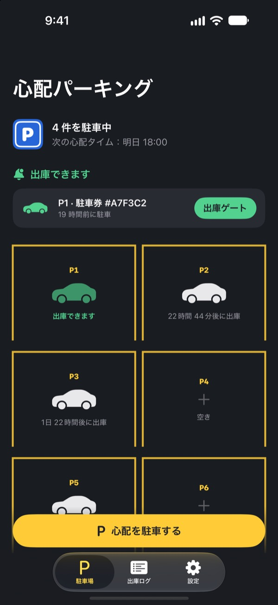
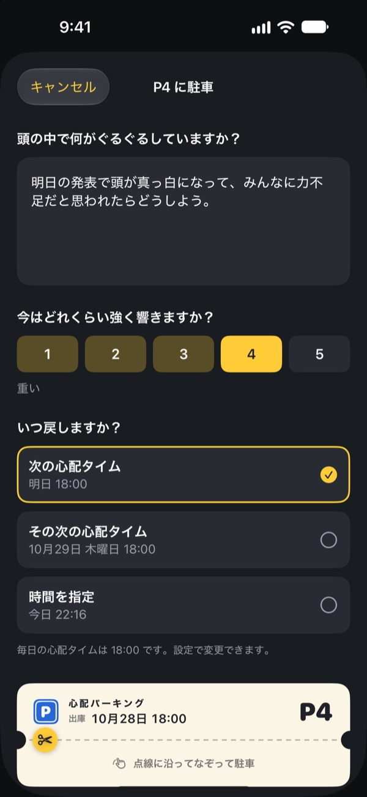
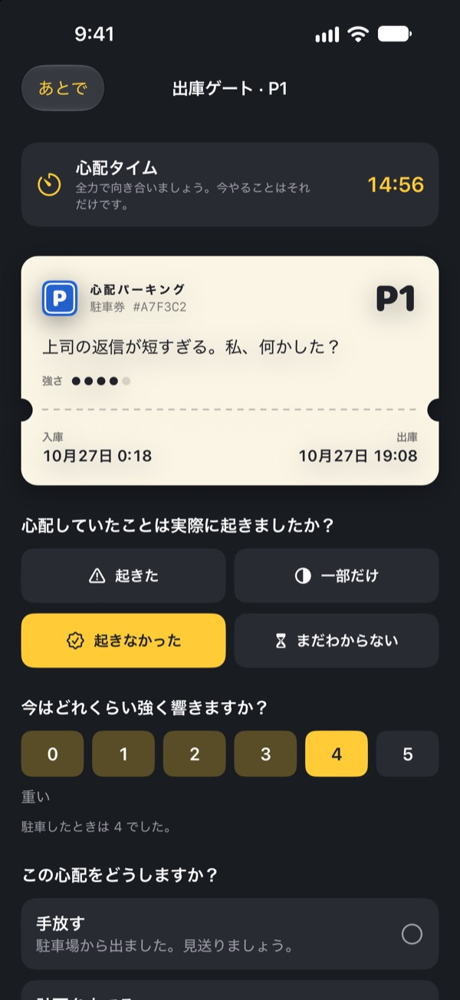
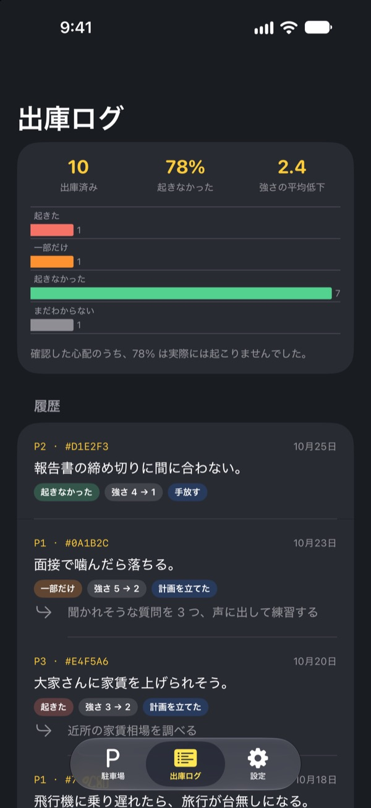

心配は、
いったん駐車しておこう
寝る前に頭の中をぐるぐるする心配を、駐車券に書いて預けましょう。心配タイムになったらお返しします。それまでは持ち歩かなくて大丈夫です。
すべての機能が無料。広告もアカウントもありません。

心配をひとつ駐車してみる
例文のままでも、いま頭にあることを書いてもかまいません。駐車するとぼかされ、心配タイムにもう一度取り出します。
電気を消すと、頭がフル回転しませんか？
布団に入ったとたん、今日言ったひと言、明日の会議、まだ返ってこない返信が次々に浮かんできます。考えないようにするほど、かえって大きくなる。心配パーキングは、心配を無理に追い払いません。書いて置き場所を決め、向き合う時間を別に用意します。
書けば、頭から降ろせる
頭の中で聞こえるとおりに書き、いまどれくらい強く響いているかを1〜5で選びます。駐車券を切り取ると、心配はぼかされたまま駐車場に残ります。
また浮かんできたら「もう場所はあるよ」と言ってあげてください。向き合う時間は、ちゃんと別にあります。

心配タイムに15分だけ向き合う
毎日決めた心配タイムにお知らせが届きます。出庫ゲートで心配を読み返し、本当に起きたのか、今はどれくらい響くのかを確かめます。
そのあと手放すか、小さな次の一歩に変えるか、次の心配タイムまでもう一度駐車します。

心配がどれだけ当たったか見える
出庫した心配が増えるほど、出庫ログに実際に起きた割合と強さの変化がはっきり表れます。
心配は未来を実際より悪く予想しがちです。記録が増えるほど、次の心配を信じにくくなります。

はじめ方は3ステップ
- 1
心配タイムを選ぶ
最初に開いたとき、毎日心配と向き合う時間を選びます。あとから設定で変えられます。
- 2
本物の心配をひとつ駐車する
いま抱えている心配をその場で駐車して、前後で強さがどう変わるかを感じてみてください。
- 3
出庫のお知らせを許可する
心配タイムになると、区画番号だけが書かれたお知らせが届きます。
なぜ効くのか
- 決まった時間にだけ心配する
- 心配を毎日の短い心配タイムに移した人は、心配する時間が減り、不安や睡眠の問題も軽くなったと報告しています。（Borkovec ほか, 1983・McGowan & Behar, 2013）
- 書いて手放す
- 具体的な計画を立てると、やり残したことが考えに割り込みにくくなり、寝る前に5分間やることを書いた人はより早く眠りにつきました。（Masicampo & Baumeister, 2011・Scullin ほか, 2018）
- 本当に起きたか確かめる
- 慢性的に心配しがちな人が自分の心配を記録したところ、91% は実際には起きませんでした。（LaFreniere & Newman, 2020）
心配パーキングは、認知行動療法（CBT）で何十年も研究されてきた「心配の先延ばし」という技法をもとに作りました。
すべての機能が無料
無料
- 駐車区画は無制限
- 毎日の心配タイムのお知らせ、出庫時刻の指定
- 出庫ゲートと出庫ログ
- 出庫インサイト：実際に起きた割合、強さの変化
チップ（お好みで）
- 役に立ったら、開発者に小さなチップを送れます
- 小・中・大から選べます
チップで開く機能はありません。送らなくても、すべての機能をそのまま使えます。
広告、アカウント、サーバー、分析ツールはありません。書いた内容はすべて iPhone の中だけに保存されます。
よくある質問
心配タイムを変えるには？
設定タブの心配タイムから変更できます。新しい時間は、これから駐車する心配に適用されます。すでに駐車中の心配は、もとの出庫時刻のままです。
出庫のお知らせが届きません。
設定タブの通知の項目を確認してください。オフになっていたら「iOS の設定を開く」をタップして通知をオンにします。集中モードやおやすみモードがオンだと、お知らせが静かに届くことがあります。お知らせがなくても、出庫時刻になった心配は駐車場で出庫準備完了と表示されます。
お知らせに心配の内容は表示されますか？
いいえ。お知らせには「P3 出庫準備完了」のように区画番号だけが表示されます。心配の内容は、アプリを開いて出庫ゲートに入ったときだけ見えます。
心配タイムより前に見られますか？
駐車場でその車をタップし、「今すぐ出庫ゲートへ送る」を選んでください。ただ、先延ばしは待つほど効果があります。ほとんどの心配は、心配タイムのころには小さく感じられます。
新しい iPhone に記録を移せますか？
記録はすべて iPhone の中だけにあり、アカウントや同期機能はありません。iCloud やパソコンのバックアップから新しい iPhone を復元するか、クイックスタートを使えば、ほかのアプリのデータと一緒に移ります。
記録を消したいです。
出庫ログのタブで項目を左にスワイプすると削除できます。アプリを削除すると、記録もすべて消えます。
治療効果のあるアプリですか？
心配パーキングは、CBT の「心配の先延ばし」をもとにしたセルフケアのツールです。医療機器ではなく、専門的な診断や治療の代わりにはなりません。
とてもつらいときは？
心配で毎日がつらいときや、自分を傷つけたい気持ちがあるときは、ひとりで抱え込まないでください。緊急のときは 119（救急）か 110（警察）へ。お住まいの地域のこころの相談窓口や、信頼できる家族・友人にも話してみてください。
ご質問やご意見は leeo@kakao.com までお寄せください。